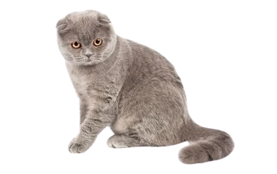
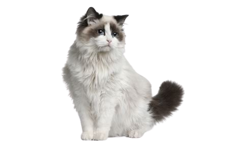
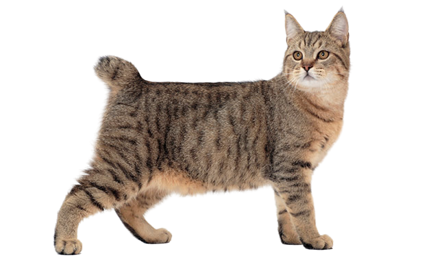
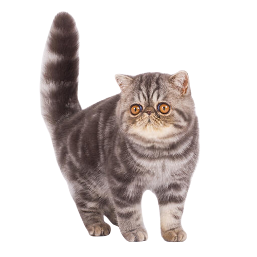
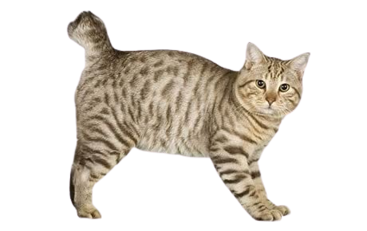

| Image | Cat Breeds | Description |
|---|---|---|
|  | Scottish Fold | There is nothing a Scottish Fold–named for their folded ears–likes better than to be with their people, participating in whatever they are doing. As the name implies, Scottish Folds come from Scotland, and they can all trace their ancestry back to a barn cat named Susie who had folded ears and worked as a mouser. These cats are sensitive, expressive, and active. They love to play and are not the best cats to leave home alone. They prefer a companion–even another cat–to keep them company. If you can provide this loving feline with the attention they crave and keep up with their needs, they just might be the new furry family member you’re looking for. Read more... |
|  | Ragdoll | With positive reinforcement, Ragdoll cats learn quickly and can pick up tricks as well as good behaviors such as using a scratching post.The Ragdoll cat is an all-around best buddy to just about everyone. They love their human families–even children–and will get along with other pets fairly well. Docile, sweet, and happy to relax for a good cuddle session, the loving Ragdoll will even greet their humans at the door when they come home. If you’re looking for a companion, you can’t find a much better choice than one of these easygoing felines. Read more... |
|  | Pixie Bob | A Pixie-Bob may look wild in appearance, and that may be because they’re thought to have descended from a barn cat and a bobcat. However, these days, they’re anything but wild. Pixie-Bobs tend to be sweet, loving cats who adore their families–even kids! Read on to find out more about the Pixie-Bob cat breed! Read more... |
|  | Exotic | The Exotic is sweet, docile and quiet, but don’t get the idea that she is merely an adornment for the home. She loves to play when she’s not sitting in a lap or being petted. Read more... |
|  | American Bobtail | With his short tail, tufted ears and toes, and powerful body, the American Bobtail has a distinctively wild look.
Read more... |